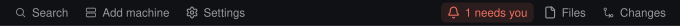
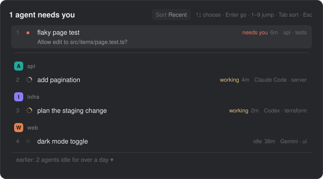
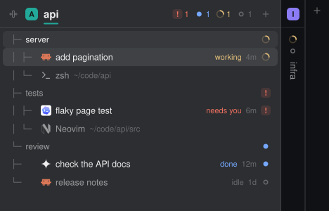
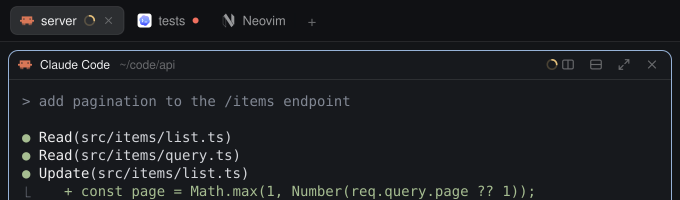
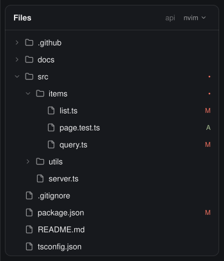
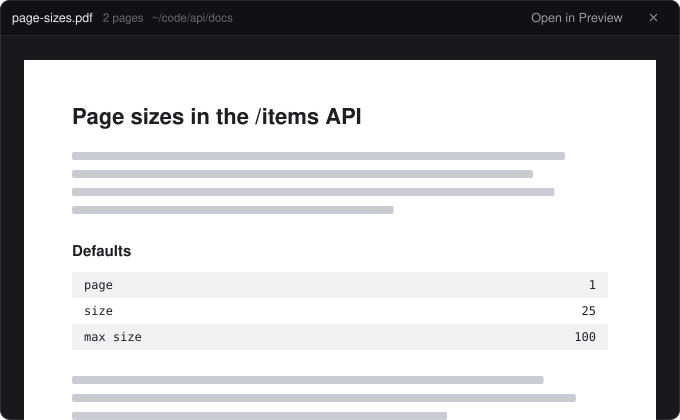
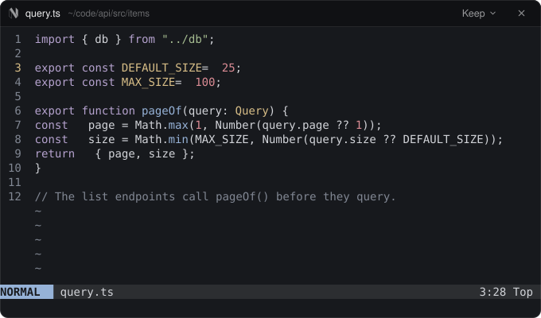
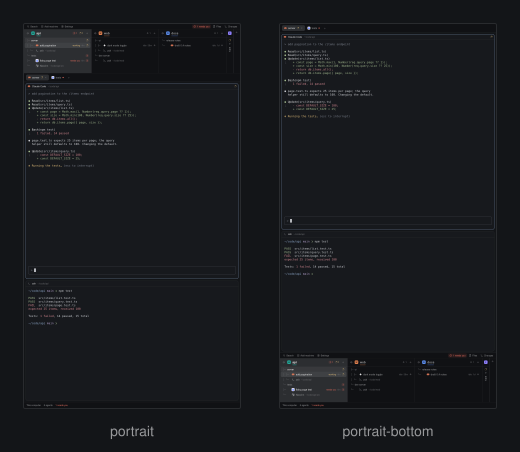

Usage
The screen top to bottom: the bar (strip and space tree), the tab bar, the work area with your terminals, the status line. A side panel opens on the right.
The strip
The thin bar above the tree, 26 px tall.

- Search, Add machine and Settings open Herdr's own search, add-machine dialog and settings. A small accent dot on Settings means an app update has downloaded and is waiting.
- The bell counts the agents waiting on you: “1 needs you · 2 done”. Agents asking for input count first, then agents that finished while you were away. It is lit while anyone is waiting and reads “Needs you” (dim) when nobody is.
- Click: go to the agent that has waited longest, asking ones first. Click again from there for the next, wrapping around.
- Shift-click, or the key in the keys table: open the Agents waiting list with its search box. The key opens it even while the bar is hidden, and pressing it again closes the list; shift-clicking the bell while a list is open replaces it instead of stacking another. The tooltip shows the key that is really bound on your machine.
- Files and Changes open and close the side panel on that tab. The button of the open tab is lit.

The space tree
One column per space, at least 290 px wide. Under a space's header: its tabs; under each tab: its panes. An agent pane shows the agent's logo, its name (the session title, else the tab name, else the program), a state word (“working”, “needs you”, “done”, “idle”) when the column is wide enough, the time it has been in that state (<1m, 5m, 2h, 1d) and a glyph: a turning ring for working, a ! chip for needs you, a filled dot for done, an empty ring for idle. A plain terminal shows its program and folder (the end of the path stays visible).

- Header
- Click selects the space. Drag it onto another header of the same machine to reorder. The fold button turns the column into a strip. The plus makes a new terminal or agent there. Right-click opens Herdr's space menu. The coloured rule under the name and the badge are the space's colour.
- Tab row
- Click shows the tab, double-click renames it, drag onto another tab of the same space reorders, right-click opens the tab menu.
- Pane row
- Click focuses the pane, right-click opens the pane menu.
- Sub-agent row
- An agent that has no pane of its own (a sub-agent) gets a row under its parent's tab, after the panes: its program icon, name, state and time. Click focuses it. It has no right-click menu, because the pane menu needs a pane.
- Empty space in a column
- Right-click opens Herdr's general menu (new space and so on).
- Folded space
- A 34 px strip: the space's badge (an unfold arrow while hovered), up to six marks for its agents (then “+N”), and its name running down the strip. Click expands it. When you move focus to an agent in a folded space (the bell, the waiting list, a notification,
agent.next), the space opens by itself and folds again when you go elsewhere. A space you opened or folded by hand stays as you left it. - When they do not fit
- Only whole columns are shown. Arrow markers at both ends say how many spaces are off that side, with the most urgent state among them. Click a marker, swipe sideways, or shift-scroll to move columns: one column per notch of a mouse wheel, one per 40 px of trackpad scroll. A thin track under the columns shows where you are. The tree follows the active space onto the screen.
agent.next and agent.prev follow the order of the tree: open spaces left to right, each space's agents top to bottom. Agents in folded spaces are not skipped; Herdr appends them after the others, in its own order, and focusing one opens its space.
The tab bar
Under the strip, 42 px. Each tab shows its program's icon, its name (Z is added while zoomed), a spinner while working and a dot when blocked or done. Click selects, double-click renames, drag reorders, right-click opens the tab menu, the active tab has a close button, and + opens Herdr's new-tab menu. Scrolling over the bar moves to the previous or next tab: one tab per notch of a mouse wheel, and one tab per 40 px of scroll on a trackpad, at most three per event. The bar also remembers, per space, whether the side panel was open and on which tab, and restores that when you switch spaces.

Pane headers
Each pane has a 30 px header: program (or folder), where it is, and its state. Hover it for split right, split down, zoom or unzoom, and close.
The Files panel
Open it with the Files button. It lists the folder of the focused pane (or the space's folder when nothing has focus), on the machine that pane lives on. It does not look at anything while closed.

- Click a folder to expand or collapse it. Click a file and it opens where it makes sense:
- Text opens in the editor shown at the right of the panel's header. Click it (
▾) to pick another: the list has only what is installed on the folder's machine, among nvim, Helix, Vim, micro and nano (in a floating window over the app; one click starts one editor, even on a double click), VS Code, Zed and Sublime Text (in their own window), Default app and Preview only. With nothing picked it is nvim when installed, else the default app. Windows offers the default app and the preview; a folder on another machine offers its terminal editors. - Pictures and PDFs open in a viewer window: a picture fits the window, a PDF shows its pages one under another. Open in Preview (the default app outside macOS) hands it to the system; Esc or the close button closes it. Every PDF page needs Poppler; without it macOS shows the first page.
- Documents, media and archives open in the system's app. Programs and scripts are never started.
- Text opens in the editor shown at the right of the panel's header. Click it (
- Right-click a file for Open with: the same editors, or Viewer and Default app for a picture or PDF, for that one file.
- Alt-click a file for a read-only preview inside the panel. The arrow in the header goes back. Binary files and unreadable files say so; long files are cut at 400,000 characters.
- Git marks:
Aadded or untracked,Mmodified,Ddeleted,Uconflict. A closed folder with a changed file inside shows a dot, in the conflict colour if a conflict is inside and otherwise in the modified colour. Marks appear when the folder is inside a git work tree andgitis on the PATH. - Folders are listed before files. Limits: 500 entries per folder and 5,000 in all; the panel says when it cut a list. The
.gitfolder itself is not listed. On Windows, in a folder with more than 500 entries, the 500 shown are the first ones PowerShell returns, not necessarily the folders first. - The list loads when you open the panel, refreshes when the focus moves to another folder or files change in it (a folder watch, not set on your home folder or a drive root), and every 10 seconds while the panel is open. A busy folder (a build writing files) is not re-read more often than every 1.5 seconds, and at most three folders are watched at once; a fourth relies on the 10-second timer. Nothing runs while the panel is closed.

The floating editor
A terminal editor opens in a window over the app, 90% wide and 85% high, with a title bar: the file, its folder and Keep. Keep → New tab turns the window's editor into a tab. With nvim there is more: Keep → Add to … opens the file as a buffer in an nvim you kept earlier in this space, focuses that tab and closes the window, and a close button quits nvim (:confirm qa, so it asks about unsaved changes). Other editors close the way they always do. The window closes when the editor ends.

Changes
The Changes tab lists the worktrees of the focused pane's repo, the repo the space was started in and any folder you add with Add folder. Folders with uncommitted changes come first, latest change first; the rest sit in a darker part below, under a No changes heading that folds them. Click a folder to open its files, diff and commit box in place. Commit stages everything in that folder (never a worktree inside it) and commits there, and the line above the box says where.
Flipping the layout
Portrait puts the bar on top. Portrait-bottom puts it between the work area and the status line. Both share the same mods and the same panel. The flip key is in the keys table; the bar toggle hides and shows the bar in either layout.
